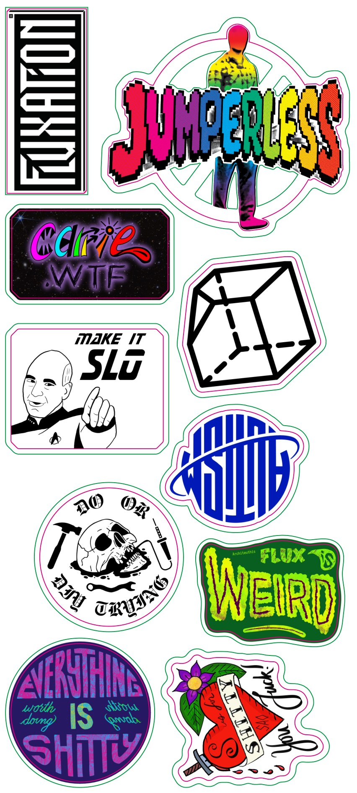
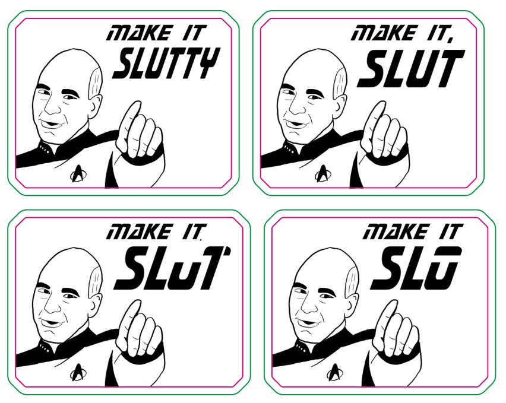

LG-540: sticker sheets
Print files for the Roland LG-540: a packed sheet of ten stickers, a four-up sheet of the Make it SLO versions, and each sticker on its own. Every file carries colour, white, gloss and both cut lines. 24 November 2026.
Not printed yet
These were rendered and looked over on the computer only. None has been through VersaWorks or the printer. Print one sticker before a full sheet.
The sheets
sticker_sheet_print.pdf(23.9 MB): ten stickers on 7.74 × 17.19 in, packed by their real outlines with 0.15 in between cuts. Some are turned to fit.make_it_sheet_print.pdf(2.1 MB): the four Make it SLO versions on 7.74 × 6.17 in.

CutContour (kiss cut), green is PerfCutContour (perf cut). Jumperless is at 29% and Fluxation is 4 in tall here.
Single stickers
Each is 3 to 3.5 in on its longest side at 100%. The perf cut sits 3 mm outside the kiss cut.
| Sticker | Kiss cut | White ink | Gloss |
|---|---|---|---|
| carrie.wtf | 3.00 × 1.68 in | under the purple glow only, fading out, so the stars and the rainbow letter fills print on bare film. | the lettering, rounded like a relief (40% at the edges up to full). |
| DO OR DIY TRYING | 3.00 × 3.00 in | the skull, teeth, wrench hole and soldering-iron dots only; none in the lettering; background bare. | the skull domed like a relief (25-75%), all the black rounded on top of it (55-100%). |
| EVERYTHING worth doing IS SHITTY | 3.00 × 3.00 in | under the navy background; the lettering prints on bare film. | all the lettering, rounded (40% at the edges up to full). |
| S is for SHITTY | 2.42 × 3.00 in | everywhere except the red (heart and drops), the dagger guard, blade stub and flower centre, which print on bare film. | the heart domed as one puffy shape (35% at the edge to full), drops, petals, leaves and flower centre each rounded, a thin coat on the banner, linework on top. |
| FLUX is WEIRD | 3.00 × 2.18 in | under the dark green; the lettering prints on bare film. | the lettering, rounded (40% at the edges up to full). |
| AUTISM | 3.00 × 2.55 in | everything except the blue, so the blue prints on bare film. | the blue, each bar rounded and the whole globe shaded like a ball (thickest in the middle). |
| cube | 2.94 × 3.00 in | only that border, so the whole cube is bare film. | lines highest; each face its own level (bottom 30%, front 55%, right 80%, cut corner full) so it reads as a lit solid. |
| MAKE IT SLO | 3.31 × 2.60 in | the enclosed white areas (head, hand, badge, collar pips); the open background and the torso stay bare. | the whole figure as a relief (gentle dome over everything, head and hand rising higher, uniform black and linework highest), plus the lettering. |
| MAKE IT SLUTTY | 3.31 × 2.60 in | the enclosed white areas (head, hand, badge, collar pips); the open background and the torso stay bare. | the whole figure as a relief (gentle dome over everything, head and hand rising higher, uniform black and linework highest), plus the lettering. |
| MAKE IT, SLUT | 3.31 × 2.60 in | the enclosed white areas (head, hand, badge, collar pips); the open background and the torso stay bare. | the whole figure as a relief (gentle dome over everything, head and hand rising higher, uniform black and linework highest), plus the lettering. |
| MAKE IT, SLUT (PSD lettering) | 3.48 × 2.60 in | the enclosed white areas (head, hand, badge, collar pips); the open background and the torso stay bare. | the whole figure as a relief (gentle dome over everything, head and hand rising higher, uniform black and linework highest), plus the lettering. |
Jumperless and Fluxation on the sheet are the existing files: lentV64_even_baretext_perf_print.pdf and fluxation_print.pdf.
Printing
- Use the layered job from the Jumperless sticker guide: white, then colour, then the gloss layers in
Embossing (v). - White plate and colour are images here. In the Jumperless file the white is outlines and the colour is CMYK. Here the colour is RGB and the white is a spot-colour image. If Special Items shows no white marker, that is the first thing to suspect.
- The gloss is a height map: rounded letters and domed shapes, so more gloss layers make more relief.
- The white is there for retroreflective film. On white vinyl it changes nothing and can be left out.
Written 24 November 2026.